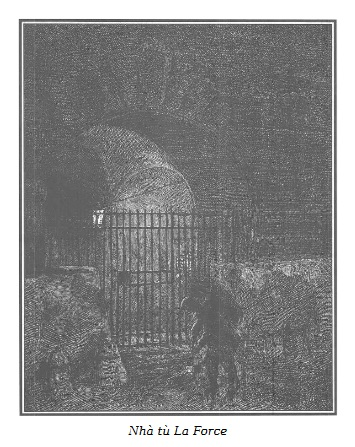
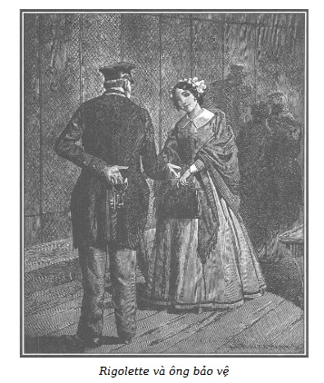

… Sai lầm khó hiểu, sai lầm bất công, sai lầm tàn bạo.
(WOLFGANG, quyển II)
Có thể độc giả sẽ trách chúng tôi về việc kéo dài cảnh phụ sau, làm hại đến sự thống nhất của câu chuyện.
Chúng tôi nghĩ, trong lúc này, lúc mà nhiều vấn đề quan trọng về lao tù, vốn ảnh hưởng mạnh mẽ đến tình trạng xã hội, đã được quan tâm, nếu chưa giải quyết được (những nhà làm luật đã rất thận trọng) ít ra cũng phải tranh luận. Chúng tôi nghĩ nhà tù là một nơi đốn mạt đáng sợ, một hàn thử biểu ảm đạm của nền văn minh đáng được chú ý.
Tóm lại, bộ mặt đa dạng của những tù nhân thuộc mọi giai cấp nhưng quan hệ của họ đối với gia đình, hoặc sự quyến luyến còn gắn họ với bề ngoài mà những bức tường nhà tù ngăn cách họ. Những chuyện đó, chúng tôi thấy thật đáng quan tâm.
Người ta sẽ kết tội chúng tôi đã tập hợp quanh nhiều tù nhân những nhân vật quen thuộc trong truyện này, và những nhân vật khác để làm nổi bật một vài ý tưởng phê phán, và để hoàn chỉnh bức tranh về cuộc sống trong tù.

.Chúng ta hãy vào nhà tù La Force.
Không có gì tối tăm, buồn thảm như quang cảnh nhà tù này, nằm ở phố Roi-de-Sicile, tại khu Marais.
Ở giữa cái sân thứ nhất, người ta thấy vài mô đất trồng các cây nhỏ. Dưới gốc những cây ấy mọc lên những mầm sớm, xanh non của cây báo xuân và cây giọt sữa. Một bậc lên thềm trên của cái cổng có rào mắt cáo với những cây nho sần sùi quấn theo dẫn đến một trong bảy hoặc tám nhà dành cho tù nhân đi dạo.
Những tòa nhà rộng bao vây mấy cái sân rộng ấy, giống như những trại lính hoặc những công xưởng, được giữ gìn rất cẩn thận. Mặt trước tòa nhà ốp đá trắng, có những cửa sổ mở rộng và cao rất thoáng khí. Gạch lát các lối đi những sân chơi sạch như chùi. Ở tầng trệt là những phòng rộng, rất ấm trong mùa rét và mát trong mùa nóng, dành làm nơi trò chuyện, nhà xưởng hoặc nhà ăn cho tù nhân. Các tầng gác trên cùng là phòng ngủ, cao từ mười đến mười hai pied, lát gạch vuông sạch bóng. Hai dãy giường bằng sắt có đệm mềm và dày, có gối bằng dạ trắng và một chăn len dày, ấm.
Nhìn những căn nhà có đầy đủ tiện nghi và sạch sẽ ấy, người ta rất đỗi ngạc nhiên vì đã quen thấy các nhà tù khác bẩn thỉu, buồn thảm và tối tăm.
Người ta đã lầm.
Những gì bẩn thỉu, buồn thảm và tối tăm chính là những căn nhà lụp xụp như nhà của ông già mài ngọc Morel, thật thà và nghèo khổ, suy nhược, đã phải nhường chiếc giường mọt cho bà vợ tàn tật và bỏ rơi những đứa con đói khát, xanh xao, rét run vì lạnh trong những ổ rơm bẩn thỉu.
Những con người sống trong hai môi trường đó cũng tương phản nhau rõ rệt.
Sống trong những căn nhà lụp xụp, những con người này phải vật lộn với cuộc sống hằng ngày, phải cố gắng ngày này qua ngày khác, chứng kiến cuộc cạnh tranh điên dại làm giảm tiền lương của họ. Họ buồn phiền, thất vọng, không được một chút nghỉ ngơi, luôn mệt mỏi vì mất ngủ do làm việc quá sức, và khi tỉnh ra, họ lại đối mặt với hiện tại nặng trĩu, và nỗi buồn tương tự cho ngày mai.
Những con người sống trong nhà tù này thì khác. Họ được những thói xấu rèn cho cứng rắn, bất bình với quá khứ, sung sướng với cuộc sống hiện tại, tin vào tương lai (tuy có luyến tiếc tự do nhưng lại được đền bù bằng những tiện nghi vật chất khá đầy đủ), một số khi ra tù còn được một số tiền kiếm được do lao động vừa sức, do đó họ luôn vô tư và hiệu quả.
Thế thì họ còn thiếu gì?
Có phải họ không có trong nhà tù một nơi ở tốt, giường tốt, đồ ăn tốt, trợ cấp cao, công việc dễ dàng, và nhất là, trước hết xã hội họ chọn, xã hội, chúng ta hãy nhắc lại, đo đếm sự nể vì dựa trên những tội ác lớn lao? Một tù nhân rắn rỏi không biết đến nghèo khổ, đói khát, lạnh giá. Điều hắn quan tâm là nỗi hãi hùng hắn gieo cho những người lương thiện.
Hắn không thấy, không hiểu những điều đó!
Những tội ác làm nên chiến công của hắn, ảnh hưởng của hắn, sức mạnh của hắn trong đồng bọn, những cái đó chính là cuộc đời hắn.
Làm sao hắn lại sợ xấu hổ?
Lẽ ra những lời khiển trách nặng nề và nhân từ có thể làm cho hắn xấu hổ và hối hận về quá khứ, hắn lại được nghe những tiếng vỗ tay mạnh mẽ khuyến khích cướp của và giết người.
Vừa vào tù, hắn đã trù tính những tội ác mới.
Còn gì logic hơn?
Nếu hắn bị phát hiện, bắt giữ, hắn sẽ được nghỉ ngơi, được đủ tiện nghi trong tù, và gặp những bạn tội phạm trụy lạc vui vẻ và táo bạo của hắn.
Sự đồi bại của hắn có phải nhẹ hơn bọn khác? Hắn có chút hối hận gì không? Trái lại, không một chút hối hận. Hắn là đối tượng của những lời chế giễu, của những tiếng la ó dữ dội và những đe dọa khủng khiếp.
Cuối cùng, điều hiển nhiên là hắn đứng ngoài quy tắc, một kẻ bị kết án có thể ra khỏi chốn đốn mạt với một nghị lực mạnh mẽ, trở lại với cái thiện, nhờ lao động, lòng dũng cảm, lòng kiên nhẫn và chân thật, hắn có thể giấu đi quá khứ, nhưng cuộc gặp lại một trong những đồng bọn trong tù cũng đủ để lật đổ nhào cả giàn giáo cải tạo được dựng lên một cách vất vả.
Vì sao vậy?
Một kẻ được tha cứng đầu lôi kéo một kẻ được tha đã ăn năn hối hận vào một tội ác mới, tên này, mặc dù những lời đe dọa, vẫn từ chối tham gia. Nhưng bỗng một kẻ tố giác nặc danh phát hiện quá khứ của kẻ khốn nạn đó, mà anh ta muốn giấu đi bằng mọi cách, anh ta lại phải đối mặt với sự khinh bỉ, nghi ngờ. Cuối cùng, anh ta lại rơi vào đáy của bóng tối để không bao giờ rút ra được.
Sau đây chúng tôi sẽ cố gắng chứng minh hậu quả to lớn và không tránh khỏi của việc nhốt chung tù nhân.
Qua nhiều thế kỷ thử thách dã man, chần chừ tai hại, dường như đến nay người ta mới hiểu ra rằng, thật là chẳng hợp lý tí nào khi dìm vào trong một vùng ô nhiễm ghê tởm những con người mà chỉ không khí thanh khiết và trong lành mới có thể cứu vãn được mà thôi.
Phải biết mấy thế kỷ qua đi, để nhìn nhận được rằng: tập kết tại một chỗ những con người bại hoại, thì chỉ có làm tăng gấp bội cường độ của hư hỏng, do đó chẳng thể nào chữa chạy được cho con người của họ nữa.
Phải biết mấy thế kỷ qua đi, để nhìn nhận rằng, tóm lại, chỉ có một thứ thuốc đặc biệt cho cái bệnh hủi lây lan đe dọa nhân quần xã hội mà thôi.
CÁCH LY!
Chúng tôi tự cho là may mắn nếu tiếng nói yếu ớt của chúng tôi có thể, nếu không được coi trọng thì chí ít cũng được lắng nghe giữa bao tiếng nói khác, quan trọng hơn, hùng hồn hơn nhiều, kiên trì đòi hỏi rất đúng và bức xúc sự thực thi đầy đủ và hoàn bị chế độ giam giữ đơn thân ấy. Một ngày nào đó có thể xã hội sẽ nhận biết rằng CÁI ÁC chỉ là căn bệnh đột xuất chứ không phải là cố tật, rằng những tội phạm gần như bao giờ cũng là do bản năng nổi loạn mà tạo nên. Rằng có những xu hướng vốn tốt đẹp trong bản chất nhưng lại bị xuyên tạc, trù yểm bởi sự dốt nát, ích kỷ hoặc do những nhà cầm quyền thờ ơ, chểnh mảng. Rằng sức khỏe cơ thể con người cũng như sự lành mạnh của tâm hồn đều bị lệ thuộc một cách bất khả kháng vào những định luật của một chế độ vệ sinh trong lành và phòng hộ.
Tạo hóa đã phú cho mọi người những cơ quan chức năng khẩn thiết, những thèm muốn mãnh liệt, những ao ước sung túc. Xã hội phải điều hòa và thỏa mãn những nhu cầu ấy.
Người mà chỉ được phân cho có sức mạnh, thiện chí và sức khỏe, người ấy có quyền, quyền tột bậc, có công ăn việc làm, phân phối công bằng mà đảm bảo cho anh không phải là đời sống thừa mứa, mà là có đủ những gì cần thiết, có phương tiện để giữ được sự lành mạnh, tráng kiện, tích cực và cần cù… do đó chính trực và tử tế vì rằng thân phận của anh ta sẽ hạnh phúc.
Những khu vực nghèo khổ, dốt nát thuần những kẻ bệnh hoạn với trái tim tàn héo. Hãy làm trong lành vùng ô trọc đó, truyền bá học vấn đến cho họ, làm cho họ ham thích lao động, lương, thưởng công bằng, thế là lập tức từ những con người ốm yếu, tâm hồn tàn úa ấy tái sinh CÁI THIỆN, đó là sức sống, sức mạnh của tâm hồn.
Chúng tôi mời độc giả đến phòng thăm hỏi của nhà tù La Force. Đó là một căn phòng tối tăm, chia đôi theo chiều dài, ngăn cách hai phần bằng nhau bởi một hành lang chật hẹp có rào thưa.
Một bên cửa hành lang có đường thông vào phía trong nhà tù, bên kia thông với phòng lục sự dành cho người đến thăm.
Cuộc tiếp xúc và thăm hỏi diễn ra qua tấm lưới sắt, dưới sự giám sát của người bảo vệ ngồi ở giữa, phía cuối hành lang.
Thái độ của những phạm nhân có mặt hôm đó ở phòng thăm hỏi mang nhiều vẻ trái ngược. Có người ăn mặc tiều tụy, những người khác có vẻ dân thợ, một số nữa thuộc lớp người có tiền của.
Sự trái nghịch như vậy cũng thể hiện ở những người thăm nuôi, phần lớn là phụ nữ.
Nhìn chung thì tù nhân ít buồn hơn là những người đến thăm nom vì lạ lùng và bi thảm thật, qua thực tế chẳng hề có nỗi sầu thảm, nỗi xấu hổ nhục nhã nào tồn tại được sau ba, bốn ngày họ bị nhốt chung phòng.
Hãy trở lại hành lang.
Mặc dù những tiếng ồn ào của nhiều cuộc trao đổi thầm thì từ phía này sang phía kia hành lang, phạm nhân và người đến thăm cũng dần dà quen với cách trò chuyện thực sự, miễn là không được lãng đi lúc nào vì những người bên cạnh. Cũng là bí mật nhà nghề đấy, giữa nơi ồn ào như chợ vỡ, phải lắng cho được người ta nói gì với mình mà chẳng cần phải nghe quá nhiều những gì người khác họ nói quanh ta.
Trong số tù nhân được gọi đến gặp người thân có Nicolas, đứng khá xa người bảo vệ.
Buồn rầu, tuyệt vọng khi bị bắt, nay thì hắn khác hẳn, lì lợm, vô liêm sỉ. Sự lây lan và ảnh hưởng xấu do việc nhốt chung tù nhân đã dẫn tới kết quả đó.
Chắc chắn rằng nếu ngay sau khi bị bắt, hắn bị biệt giam thì trong phút ban đầu hắn còn nặng trĩu lo âu, nhớ đến tội ác đã làm mà sợ những hình phạt đang chờ đợi, hẳn tên khốn kiếp ấy, nếu không hối hận tí nào thì chí ít cũng phải trải qua một giai đoạn sợ hãi bổ ích mà không gì làm hắn quên khuấy nổi.
Ai mà biết được điều gì có thể xảy đến ở một tên hung phạm do cứ phải bắt buộc nghĩ ngợi không ngừng đến những tội ác đã gây ra và những trừng phạt sẽ phải chịu?
Còn lâu! Bị vứt bỏ giữa đám cặn bã đầu trộm đuôi cướp, vẫn thường coi tí chút ăn năn là hèn hạ, là một sự phản bội thì đúng hơn đáng để trừng trị thêm, vì trong sự chai sạn cộc cằn, trong sự nghi kỵ xuẩn ngốc thì chúng coi là có khả năng rình mò chúng những ai (nếu có một ai đó) tỏ ra buồn rầu, ủ rũ vì ăn năn hối lỗi mà không phụ họa với sự thản nhiên, táo tợn, mà run rẩy trong khi tiếp xúc với chúng.
Sống giữa bầy kẻ cướp, Nicolas đã nổi tiếng từ lâu, do tục lệ trong tù, đã vượt lên trên sự yếu hèn, xứng đáng với danh hiệu đại ca của hắn.
Do bố hắn bị tử hình, anh hắn bị tù chung thân, hắn được đồng bọn tiếp nhận và tôn là tay lão luyện trong việc gây tội ác.
Cuộc tàn sát này đến cuộc tàn sát khác đã kích thích thằng con trai mụ góa.
Những lời tán tụng truyền thống xấu xa của gia đình hắn làm hắn say mê.
Trong cơn choáng váng xấu xa đó, hắn đã quên ngay tương lai mình đang bị đe dọa, hắn nghĩ đến thất bại vừa qua thì càng thêm tự phụ, tự kiêu và khoác lác với đồng bọn.
Thái độ của Nicolas ngạo mạn khác hẳn với thái độ buồn phiền và kinh ngạc của người đến thăm hắn.
Người đến thăm hắn là lão Micou, người oa trữ, chứa chấp ở ngõ hẹp Brasserie, bà Fermont và con gái bà ta, nạn nhân của lòng tham lam của Jacques Ferrand đã bắt buộc họ phải trốn tránh trong nhà lão.
Lão Micou hiểu rõ hình phạt mà lão sẽ phải chịu vì lão đã nhiều lần mua bằng giá rẻ mạt những thứ Nicolas và đồng bọn cướp được.
Đứa con trai mụ góa bị bắt, tay oa trữ gần như thấy mình nằm trong tay bọn cướp, chúng chỉ cần khai ra là lão sẽ bị liên quan. Mặc dù không có những chứng cứ cụ thể, chuyện đó vẫn không kém phần quan trọng, đáng sợ, do đó lão phải thực hiện ngay mệnh lệnh của Nicolas do một người tù được tha mang đến.
– Này bố Micou, có khỏe không? – Tên cướp hỏi.
– Để phục vụ anh, con người dũng cảm, – lão oa trữ hấp tấp nói – ngay khi gặp người anh phái đến, tôi lập tức…
– Này, sao ông không mày tao thân mật nữa à? Ông khinh bỉ tôi vì tôi đang trong tù sao?
– Không, tôi không khinh ai cả. – Lão Micou đáp, không bận tâm đến quan hệ thân mật trước đấy với tên cướp khốn nạn đó.
– Này, thế thì hãy xưng hô với tôi như bấy lâu nay, hoặc là ông không còn thân mật với tôi như xưa, làm tôi tan nát trái tim.
– Từ sáng sớm, – lão Micou nói rên rỉ – tao đã quan tâm đến việc nhỏ mày ủy thác.
– Đấy, cứ nói như thế, bố Micou, tôi biết là ông không quên bạn bè. Thuốc lá của tôi đâu?
– Tao đã đưa hai livre cho ông chưởng khế!
– Lão ấy có tốt không?
– Mọi người đều tốt.
– Còn chân giò?
– Đã đặt chân giò với bánh mì trắng bốn livre. Mày sẽ bất ngờ vì tao đặt thêm nửa tá trứng luộc và một cái bánh pho mát Hà Lan to.
– Đó mới đúng là cư xử tốt nhất với bạn bè. Còn rượu vang?
– Có sáu chai nguyên xi, nhưng mày nhớ là người ta chỉ cho một ngày một chai.
– Ông muốn gì?
– Tao mong mày hài lòng về tao!
– Tất nhiên tôi sẽ bằng lòng và bằng lòng mãi, bố Micou ạ, vì chân giò, trứng, pho mát, rượu vang, chỉ còn dùng được đến khi ăn, nhưng như người ta nói, khi không còn nữa sẽ được bố Micou cung cấp, và cả kẹo nữa nếu tôi còn tử tế.
– Sao, mày muốn…
– Cứ khoảng hai hoặc ba ngày ông lại đem đến cho tôi các thức ăn nhỏ này.
– Làm sao tao có thể làm được. Một lần thôi chứ!
– Một lần thôi ư? Đùi heo muối và rượu vang, phải tiếp tục chứ!
– Có thể được. Nhưng tao không có nhiệm vụ cung cấp bánh kẹo.
– Ôi, bố Micou thật không tốt, thật bất công khi bố từ chối cấp đùi heo cho tôi. Bố thường xuyên mua chì chôm chỉa được của tôi.
– Hãy im đi! – Lão Micou hoảng sợ nói.
– Không, tôi sẽ nhờ bọn tọc mạch quan tòa phán xét. Tôi sẽ bảo họ: “Các ông hãy hình dung bố Micou…”
– Tốt, tốt! – Lão kêu lên sợ hãi khi thấy Nicolas nổi giận, sẵn sàng dùng quyền lực đối với những người tòng phạm. – Tao đồng ý, tao sẽ cung cấp đầy đủ cho mày.
– Đúng, đúng lắm. Đừng quên đem cà phê cho mẹ tôi và Quả Bầu đang ở Saint-Lazare. Họ uống cà phê mỗi buổi sáng, nay không còn nữa.
– Mày định làm tao phá sản sao? Đồ vô lại.
– Tùy ý ông, tôi không nói nữa. Tôi sẽ hỏi bọn tọc mạch nếu…
– Thôi được, tao sẽ đem cà phê. Ma quỷ bắt mày đi! Đáng nguyền rủa cái ngày mà tao biết mày.
– Ông ơi, lúc này tôi thật thỏa mãn được quen biết ông. Tôi tôn thờ ông như ông bố nuôi của tôi.
– Rất mong là mày sẽ không yêu cầu tao thêm gì nữa. – Lão Micou nói giọng cay đắng.
– Ông nói với mẹ tôi và chị tôi là lúc này tôi không còn run sợ như lúc mới bị bắt, lúc này tôi cũng kiên định như họ…
– Tao sẽ nói với họ. Còn gì nữa không?
– Hãy chờ một chút. Tôi quên chưa xin ông hai đôi tất len thật ấm. Chắc ông không muốn tôi bị cảm phải không?
– Tao muốn mày chết quách đi!
– Cảm ơn bố Micou, đó là chuyện sau này. Hôm nay tôi yêu cầu chuyện khác. Tôi muốn được sống yên vui. Ít ra họ cũng không rút ngắn cuộc đời tôi giống như với cha tôi. Tôi sẽ sống vui vẻ, vui với đời.
– Đời mày mới sạch sẽ chứ!
– Thật tuyệt! Từ khi tôi ở đây, tôi sống như một ông vua. Nếu có đèn lồng và pháo hoa, họ sẽ thắp lên và bắn lên hoan nghênh khi biết tôi là con của tử tù Martial!
– Thật cảm động! Đúng là con nhà nòi.
– Này, đã có biết mấy dòng giống Công tước, Hầu tước, tại sao chúng ta lại không có được nghiệp nhà? – Tên cướp châm biếm kịch liệt.
– Đúng, chính là Charlotđao phủ đã cho mày tước vị tại quảng trường Palais đấy!
– Chắc chắn không phải ông linh mục và còn hơn nữa kia. Trong tù phải thuộc cỡ quý tộc đại bợm đại kẻ cướp mới được thừa nhận, bằng không, chúng nó sẽ chẳng coi mình ra gì. Ở đây, có một thằng tên là Germain, một thằng nhỏ bé, còn trẻ nhưng có thái độ khó chịu, khinh chúng tôi. Hãy liệu hồn. Đó là một thằng thâm hiểm. Người ta ngờ hắn là một con cừu mật thám. Nếu thế người ta sẽ xẻo cái mũi hắn để cảnh cáo.
– Germain? Người còn trẻ tên là Germain?
– Đúng, ông cũng biết hắn à? Hắn cũng là tên ăn cắp có hạng, mặc dù thái độ ngờ nghệch của hắn.
– Tao không biết hắn, nhưng nếu là tên Germain thì tao đã nghe thấy nói tới, hắn cứ liệu hồn!
– Sao cơ?
– Hắn đã không rơi vào bẫy của Vélu và Thọt Lớn vừa qua.
– Chuyện đó thế nào?
– Tao không biết. Chúng nói ở tỉnh, hắn đã tố giác vài đứa trong nhóm chúng.
– Tôi tin chắc Germain là một con “cừu”. Người ta sẽ “ăn thịt cừu”. Tôi sẽ nói chuyện đó với bạn bè. Chuyện đó sẽ làm họ hứng thú. Thế đấy, thằng Thọt Lớn có luôn chơi xỏ những người thuê nhà ông không?
– Cảm ơn Chúa, tao sẽ gạt bỏ tên xấu xa bẩn thỉu. Mày sẽ thấy nay hoặc mai…
– Vui muôn năm. Chúng ta sẽ cười! Đó lại là một tên không hay hờn dỗi nữa.
– Vì hắn gặp lại Germain tại đây. Tao đã nói với mày là thằng trẻ tuổi ấy cứ liệu hồn nếu vẫn là thằng đó.
– Vì sao người ta lại tóm cổ tên Thọt Lớn ấy?
– Vì một vụ cướp chung với một tên mới được tha muốn làm ăn lương thiện. À đúng, thằng Thọt Lớn đã thắng tuyệt đẹp. Hắn có nhiều thói xấu, tên bẩn thỉu ấy. Tao tin là chính hắn đã đánh cắp cái hòm của hai người phụ nữ trên phòng tầng tư…
– Phụ nữ nào? À đúng, hai người phụ nữ mà cô trẻ hơn làm ông bị kích thích, lão già ăn cướp, lão thấy cô ta đẹp quá mà.
– Họ sẽ chẳng kích thích được ai nữa, vì người mẹ chết và cô con gái thì chẳng nghĩa lý gì. Tao mất toi mười lăm franc tiền cho thuê buồng. Ma quỷ sẽ hại tao như thế nào, nếu tao cho một mảnh giẻ để chôn họ. Tao đã bị thiệt hại nhiều, chưa kể những của ngon ngọt mà mày đã yêu cầu tao cung cấp cho mày và gia đình mày. Điều được dàn xếp như thế, hay ho gớm! Năm nay tao gặp may mà.
– Chà, chà, ông Micou, ông luôn kêu ca. Ông giàu nứt đố đổ vách mà. Tôi sẽ không giữ ông lại nữa.
– May quá!
– Ông sẽ trở lại, cho tôi tin tức về mẹ tôi và Quả Bầu và các thực phẩm khác nhé.
– Được, phải thế.
– Chà, tôi còn quên, ông nhớ mua cho tôi một cái mũ cát-két mới bằng nhung Scotland với một quả tua. Cái mũ của tôi không dùng được nữa.
– Ái chà, mày nhất định đùa đấy hả?
– Không đâu. Tôi muốn có một cái cát-két kiểu Scotland, ý định của tôi là thế!
– Nhưng mày ra sức làm tao phải đi ăn mày mất!
– Này, bố Micou, đừng phát cáu lên. Đồng ý hay không, tôi không ép ông, nhưng, thôi đủ rồi…
Micou nghĩ mình đang trong tay Nicolas, lão đứng dậy, sợ ngồi lâu hắn lại thêm yêu sách.
– Mày sẽ có mũ, nhưng liệu đấy. Nếu mày đòi hỏi thêm chuyện khác nữa, tao sẽ không cho nữa đâu. Đến đâu thì đến, mày sẽ mất nhiều hơn tao.
– Bình tĩnh nào bố Micou. Tôi không bắt bí ông đâu. Già néo đứt dây, làm quá thì mất cả chì lẫn chài, tôi biết. Ông nôn cũng khá đấy chứ!
Kẻ oa trữ nhún vai, tức giận đi ra. Người bảo vệ đưa Nicolas trở về phòng giam.
Trong lúc lão Micou rời phòng nói chuyện dành cho tù nhân, Rigolette đi vào.
Người bảo vệ là một cựu binh, trạc tứ tuần, có bộ mặt cứng rắn, kiên nghị, mặc một áo vét, đội mũ cát-két và mặc quần màu xanh, hai ngôi sao bạc thêu trên cổ và trên mép quăn của bộ quần áo.
Khi thấy Rigolette, mặt ông ta tươi tỉnh ra do có thiện cảm với cô. Ông ta bị hấp dẫn bởi vẻ duyên dáng và lòng tốt của Rigolette khi khuyên nhủ Germain trong lúc nói chuyện với cậu ta trong phòng.
Germain là một tù nhân không bình thường. Sự khiêm nhường, dịu dàng và nỗi ưu phiền làm cho những người coi tù phải chú ý, muốn giúp cậu ta tránh khỏi sự thù ghét của đám bạn tù vốn luôn nhìn cậu ta với một thái độ thù ghét.
Ngoài trời mưa như trút, nhưng nhờ đôi guốc cao gót và cái ô, Rigolette đã can đảm đi qua mưa gió.
– Cái ngày tồi tệ làm sao! Cô gái đáng thương! – Người bảo vệ nói một cách thiện cảm. – Phải nhiệt tình lắm mới đi vào thời tiết như thế này.
– Suốt dọc đường khi nghĩ sẽ đem lại niềm vui cho kẻ bị giam cầm, người ta sẽ không ngại gì đến thời tiết.
– Tôi không cần hỏi cô đến thăm người nào chứ?
– Đúng thế, anh Germain tội nghiệp của tôi, anh ấy có khỏe không?
– Này, cô thân mến! Tôi đã quan sát khá kĩ các phạm nhân. Vài ngày đầu họ đều buồn, nhưng dần dần họ hòa vào cái chung của người khác. Và những người buồn nhất những ngày đầu lại là những người vui nhất. Cậu Germain không phải loại như thế. Cậu ta ngày càng nặng trĩu buồn phiền, cậu ta…
– Đó là điều làm tôi đau khổ.
– Khi tôi làm nhiệm vụ trong sân, tôi thấy cậu ta luôn một mình. Tôi đã nói với cô nên khuyên cậu ta không nên tự cô lập mình, như thế cậu ta sẽ trở thành đối tượng của bọn chúng. Sân chơi tuy được kiểm soát nhưng khó tránh được nguy hiểm.
– Chà, lạy Chúa, lạy Chúa! Liệu có nguy hiểm cho anh ấy không?
– Cũng không chắc. Nhưng bọn chúng thấy cậu ta không thuộc loại như chúng, trông cậu ta có vẻ thật thà và cao thượng, nên chúng ghét.
– Tôi đã nhắc anh ấy làm như ông dặn, cố chan hòa với bọn chúng, nhưng anh ấy cảm thấy ghê tởm nên không thực hiện được.
– Cậu ta đã nhầm, cậu ta đã nhầm. Một cuộc ẩu đả sẽ nhanh chóng diễn ra.
– Lạy Chúa! Người ta không thể tách anh ấy ra khỏi những người khác sao?
– Từ sau vài ngày tôi phát hiện được ý định xấu của bọn chúng, tôi đã khuyên cậu ta là nên ở lại trong phòng dành riêng cho những tù nhân được ưu đãi.
– Rồi thế nào?
– Tôi không nhớ đến một điều là một dãy buồng giam của nhà tù đang sửa chữa, và nhiều buồng khác vừa có người ở.
– Những kẻ xấu đó có khả năng giết anh ấy không? – Rigolette hỏi, mắt đẫm lệ.
– Không có cách nào khác, ngoài cách thuê được phòng riêng.
– Than ôi! Anh ấy sẽ bị chúng ám hại, nếu cứ để bọn chúng ghét.
– Cô yên tâm, người ta sẽ theo sát cậu ta, nhưng tôi xin nhắc lại, cô thân mến, khuyên cậu ta nên thân mật một chút, chỉ bước đầu là khó thôi!
– Tôi sẽ hết sức khuyên nhủ anh ấy, thưa ông. Nhưng một người tử tế thật khó hòa mình với những hạng người như thế.
– Trong hai cái xấu, nên chọn một cái ít xấu hơn! Tôi sẽ hỏi cậu Germain. – Người bảo vệ nói một cách hồ hởi. – Chỉ còn hai người đến thăm nữa là hết, hãy chờ cho họ đi khỏi. Tôi sẽ cho cậu ta vào trong hành lang, cô sẽ nói chuyện thoải mái hơn vì chỉ còn bị ngăn bởi một tấm lưới thép chứ không phải là hai.
– Ôi, thưa ông, ông thật tốt biết bao! Tôi vô cùng cảm ơn ông.
– Im, đừng để người ta nghe thấy, họ sẽ ghen. Cô hãy ngồi ra chỗ này, đầu ghế. Khi người đàn bà và người đàn ông kia ra về, tôi sẽ báo cho Germain.

.Người bảo vệ đi vào chỗ làm việc ngay giữa hành lang.
Rigolette buồn rầu đi lại phía đầu ghế, nơi dành cho người đến thăm ngồi chờ.
Trong khi Rigolette ngồi chờ Germain, chúng tôi mời độc giả chứng kiến cuộc trao đổi của các tù nhân còn ở lại sau khi Nicolas Martial đi ra.